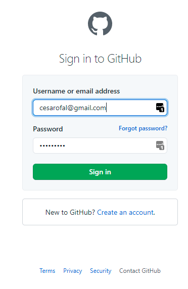
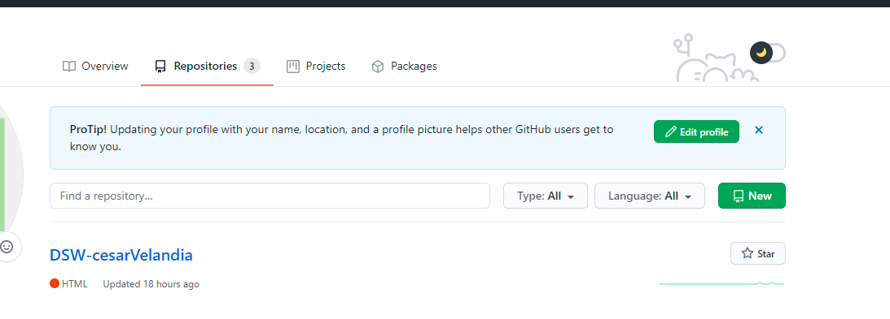
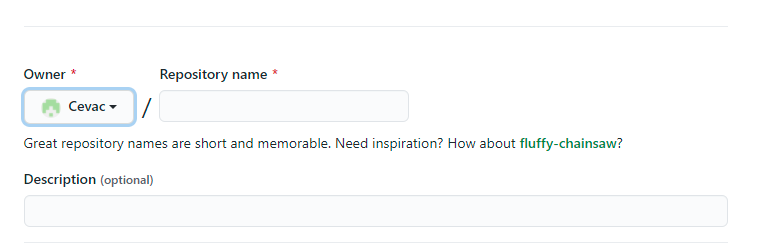
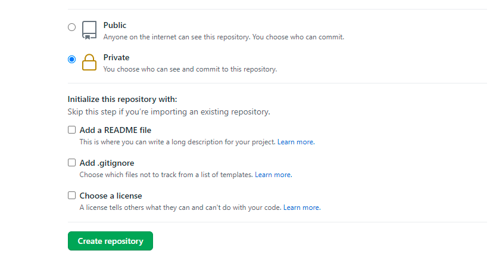
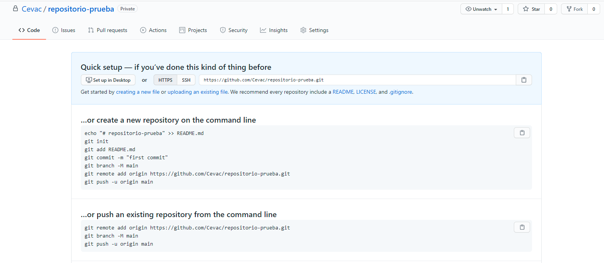

Git es un software de control de versiones que inicialmente fue diseñado y desarrollado por Linus Torvalds. Git está pensado en la eficiencia , flexibilidad y rendimiento a la hora de hacer uso y mantener nuestros proyectos de software con un correcto versionamiento.
Para crear nuestro primer repositorio en Github nos dirigimos al sitio oficial de github que es: https://github.com seguido de ello le damos al boton Sign in para poder ingresar. Ingresamos nuestros username y contrasena de github.
Luego , le damos click al avatar de nuestro github en la parte superior derecha se nos desplegará un menú y nos dirigmos al item que dice "Your repositories" nos llevara a una pagina donde se mostrara nuestros repositorios que hemos creado a lo largo del tiempo. Le damos click al boton "New".
Nos aparecerá un formulario a diligenciar en lo cual nos pedirá información inicial importante del repositorio como: el nombre del repositorio , una descripción (opcional) que indique que contendrá el repositorio.
Nos da a elegir si queremos que nuestro repositorio sea público o privado , si es público nuestro repositorio los demás usuarios ajenos al proyecto podrán ver lo que contiene el repositorio , si por el contrario es privado solo podrá acceder el creador del repositorio y sus colaboradores aceptados. Por último , nos pregunta si deseamos agregar algunos archivos adicionales tales como un README , un archivo .gitignore que nos sirve para indicar que archivos no queremos versionar y una licencia.
Una vez configurado nuestro repositorio adaptado a nuestras necesidades solo nos queda dar click al botón "Create repository" y esperamos ... y listo! ya tendremos nuestro primer repositorio preparado para trabajar.
